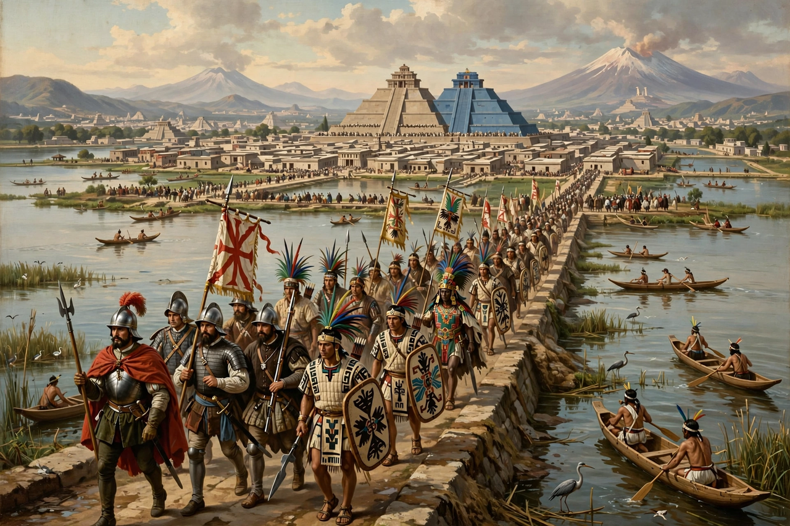

| Spanish conquest of the Aztec Empire | |
 The entry of Cortés into Tenochtitlan, 1519 | |
| Date | 1519–1521 |
|---|---|
| Spanish commander | Hernán Cortés |
| Aztec rulers | Moctezuma II, Cuitláhuac, Cuauhtémoc |
| Result | Spanish victory; fall of Tenochtitlan; foundation of New Spain |
The Spanish conquest of the Aztec Empire (1519–1521) was one of the pivotal campaigns of the Spanish colonisation of the Americas. An expedition led by Hernán Cortés, allied with tens of thousands of indigenous warriors — above all the Tlaxcalans, enemies of the Aztecs — and aided by a devastating smallpox epidemic, destroyed the Mexica (Aztec) Empire and took its capital, Tenochtitlan.
Cortés landed on the Gulf coast in 1519 with about 500 men, founded Veracruz, and — according to the traditional account — scuttled his ships to prevent retreat. Aided by the interpreters Jerónimo de Aguilar and La Malinche (Malintzin), he marched inland, fought and then allied with Tlaxcala, and entered Tenochtitlan on 8 November 1519, where the emperor Moctezuma II received him. Cortés soon took Moctezuma hostage in his own palace.
In Cortés's absence, his lieutenant Pedro de Alvarado massacred Aztec nobles during a festival, provoking revolt; Moctezuma died (in disputed circumstances) and the Spanish were driven from the city on the night of 30 June–1 July 1520 — La Noche Triste — with heavy losses. Smallpox, introduced by the expedition of Pánfilo de Narváez, then ravaged the city, killing the new emperor Cuitláhuac. Cortés regrouped in Tlaxcala, built brigantines to control Lake Texcoco, and besieged Tenochtitlan for some three months until it fell on 13 August 1521; the last emperor, Cuauhtémoc, was captured and later executed in 1525.
On the ruins of Tenochtitlan the Spanish built Mexico City, capital of the Viceroyalty of New Spain. Disease, war, and forced labour caused a catastrophic decline of the indigenous population across the following century, while Spanish language, Catholicism, and colonial institutions were imposed — a transformation whose accounts survive from both Spanish chroniclers, such as Bernal Díaz del Castillo, and indigenous sources such as Book 12 of the Florentine Codex.